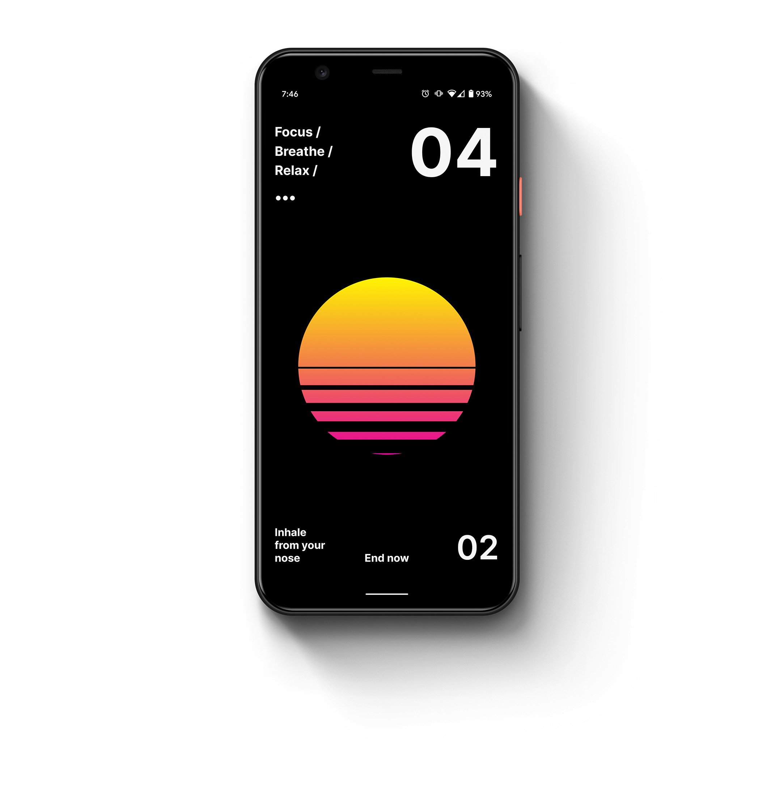
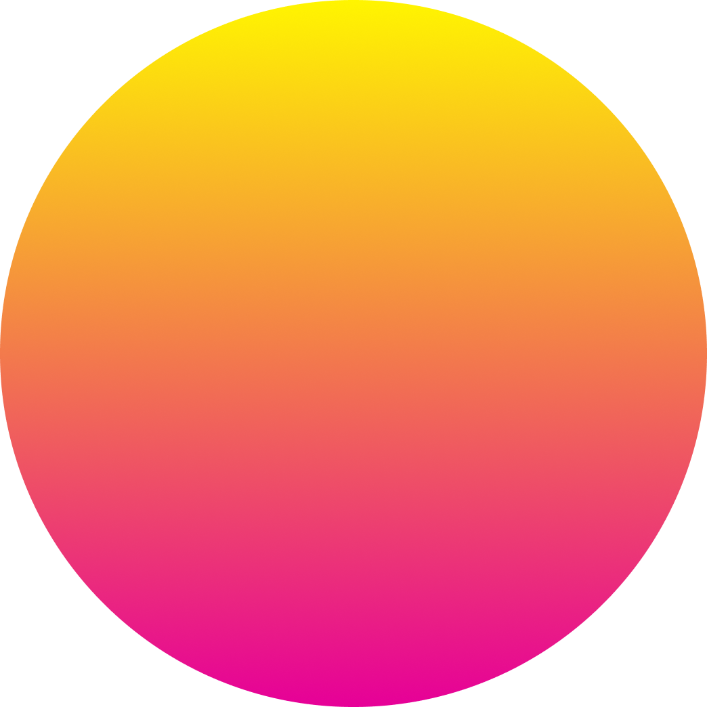
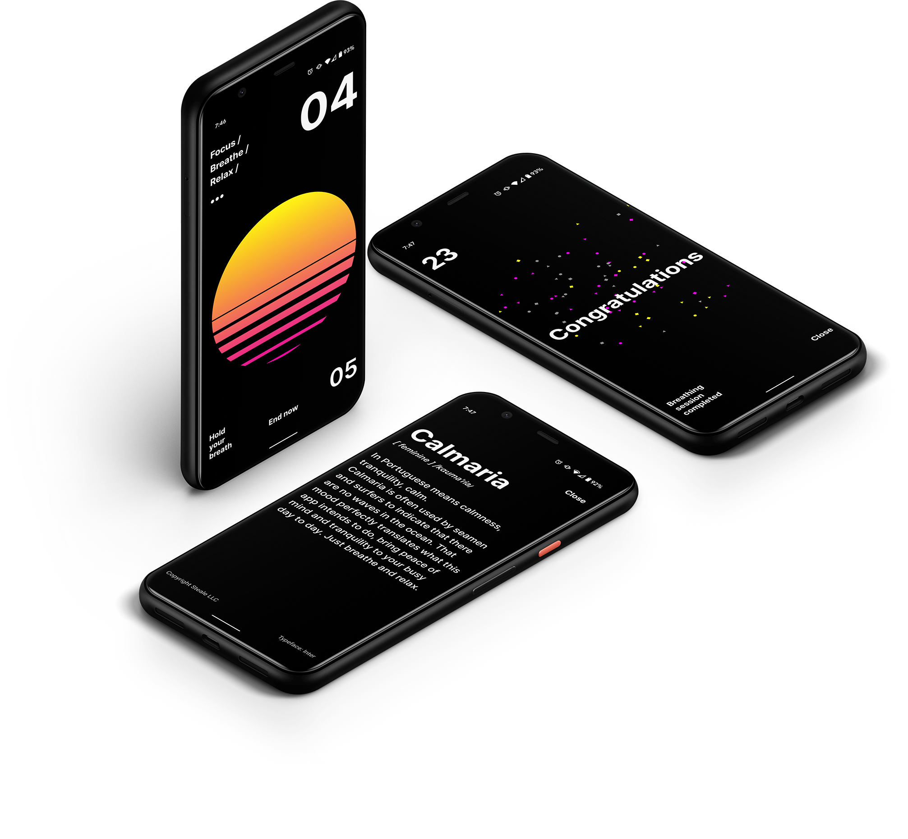
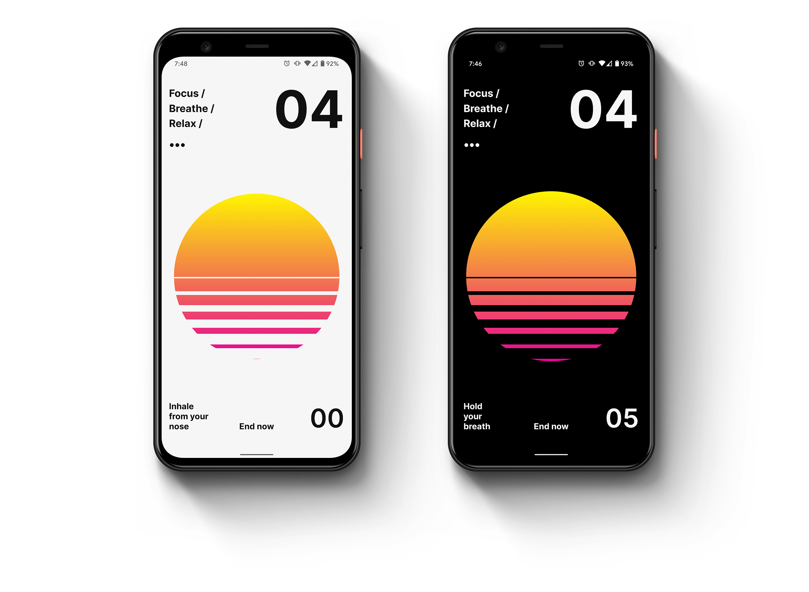

Calmaria
Focus /
Breathe /
Relax /


Access to information has helped us evolve rapidly but not without side effects. Misinformation and the strong polarization inions are amplified by our confirmation bias tendencies. What to believe, who is right, who is wrong?
Questions with no answers inevitably create anxiety. The good news is that there is a simple way to reduce it, just breathe. It works!
There are several different breathing techniques and exercises that are designed to bring your body to a deep relaxation state. Holding your breath for a period of time allows your body to better oxygenate. One of the simplest techniques is the 4-7-8 method which is simply inhaling for 4 seconds, holding your breath for 7 seconds and exhaling for 8 seconds.
In Portuguese means calmness, tranquility, calm. It’s often used by seamen and surfers to indicate that there are no waves in the ocean. That mood perfectly translates to what this app intends to do, bring peace of mind and tranquility to your busy day to day life. Just breathe and relax.
